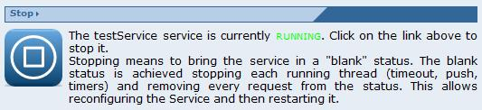

This functionality (and the corresponding section) is available only if a service is selected and the service has is running.
This functionality (and the corresponding section) is available only if a service is selected and the service has is running.
To stop a services click on the "Stop" link in the Service Management page

Stopping means to bring the service in a "blank" status. The blank status is achieved stopping each running thread (timeout, push, timers) and removing every request from the status. This allows reconfiguring the Service and then restarting it.